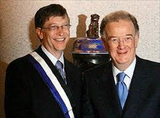

Bill Gates, người sáng lập Công ty phần mềm Microsoft và là người giàu nhất thế giới, cho biết cơ quan thuế của Mỹ phải lưu trữ các dữ liệu tài chính của ông vào một máy tính đặc biệt, bởi tài sản của ông quá nhiều. Phát biểu tại một hội nghị do Microsoft tổ chức ở Lisbon, thủ đô Bồ Đào Nha rằng một máy tính thông thường không thể xử lý đúng các số liệu tài chính của ông.